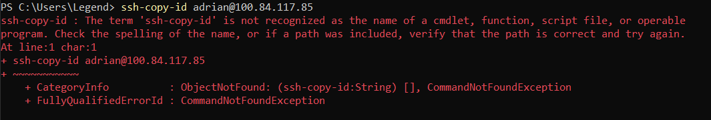
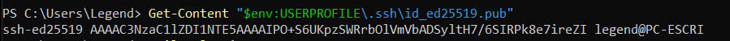
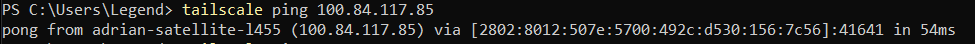
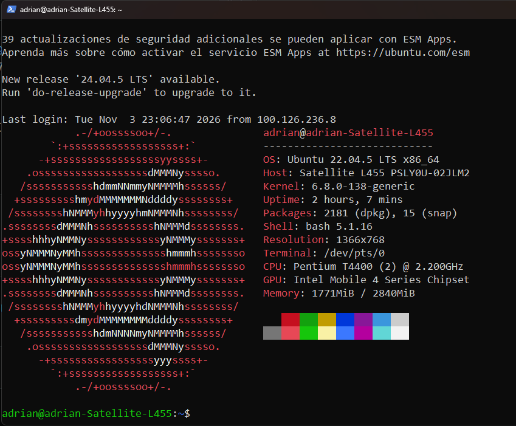

Conexión SSH al servidor mediante Tailscale¶
¿Qué es SSH?¶
SSH (Secure Shell) es un protocolo que permite conectarse de forma remota y segura a otro equipo mediante una terminal. Se utiliza para administrar servidores, ejecutar comandos y transferir información a través de una conexión cifrada.
En este caso, utilizamos SSH desde Windows 11 para administrar nuestro Zabbix Server mediante la VPN Tailscale.
1. Conexion desde windows a la maquina donde se aloja Zabbix Server¶
1.1 Generar las claves SSH¶
Abrí PowerShell y ejecutá:
ssh-keygen -t ed25519
Presioná Enter para aceptar la ruta predeterminada:
C:\Users\TU_USUARIO\.ssh\id_ed25519

Podés establecer una contraseña para proteger la clave privada.
1.2 Copiar la clave pública al servidor¶
Si el servidor tiene la IP de Tailscale 100.84.117.85 y el usuario es ubuntu, probá:
ssh-copy-id ubuntu@100.84.117.85

Atención:
ssh-copy-idno suele venir incluido en Windows. Si PowerShell indica que no reconoce el comando, usá el método manual del siguiente paso.
1.3 Instalar la clave pública manualmente¶
Mostrá tu clave pública:
Get-Content "$env:USERPROFILE\.ssh\id_ed25519.pub"

Copiá la línea completa que aparece. Desde la consola del Ubuntu, iniciá sesión como adrian y ejecutá:
mkdir -p ~/.ssh
chmod 700 ~/.ssh
nano ~/.ssh/authorized_keys
Pegá la clave pública en una línea nueva, guardá el archivo y ejecutá:
chmod 600 ~/.ssh/authorized_keys

1.4 Conectarte por Tailscale¶
Desde PowerShell en Windows:
ssh -i "$env:USERPROFILE\.ssh\id_ed25519" adrian@100.84.117.85
Para comprobar la conexión VPN antes de conectarte:
tailscale ping 100.84.117.85


Esto requiere tener Tailscale conectado en Windows y en el servidor.
Importante: si anteriormente recibiste
Permission denied (publickey), el paso 3 es necesario, salvo que ya tengas una clave autorizada en el servidor.